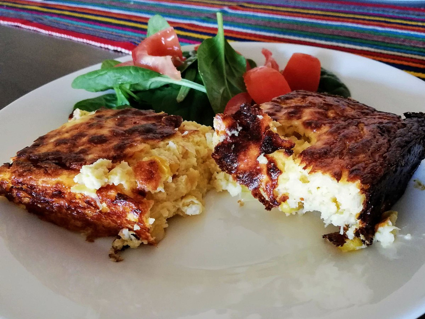

Jon's Chipa Guasu

Description
This is my adaptation of a traditional Paraguayan egg/onion/cheese dish.
It's traditionally served at parties and other festive gatherings, but it's good any time.
I'm using non-specialty ingredients available at an American supermarket. The corn in Paraguay probably
isn't bred to be as sweet as American corn, and the cheese is a little different, but this still tastes
great, even if it might not be as authentic or cooked in the same kind of oven as the real stuff.
Ingredients
- 2 sweet yellow onions, diced
- 1/2 cup (half stick) butter
- 1 cup milk
- 3 cans whole kernel corn (~1300g total)
- 12 oz. (340g) queso fresco or similar cheese
- 8 oz. low moisture shredded mozzarella cheese
- 1/4 tsp salt
- pepper to taste
- 6 eggs
Steps
- Preheat oven to 355 degrees.
- In large skillet, fry onions in butter over medium heat until onions are soft and translucent.
- Move onions and butter to mixing bowl to cool slightly; stir in salt to distribute.
- Divide queso fresco into thirds; chop into cubes to facilitate blending.
- Drain and rinse corn one can at a time.
- Add to blender:
- 1 can corn
- 1/3 cup milk
- 1/3 of the queso fresco
- 1/3 of the cooled fried onions
- 2 eggs
- Blend until combined. Avoid putting the egg into the onions if they are still hot. You want the eggs
to cook in the oven, not in the blender!
- Pour mixture into pan. I have been using a 9 x 13 inch pyrex baking dish.
- Repeat for the rest of the ingredients.
- Sprinkle mozzarella on top of the uncooked mixture. Distribute through the mixture by stirring in.
Add pepper to paste.
- Bake on center rack for 1 hr 15 min - 1 hr 45 min or until water stops bubbling out and top is
golden brown.
- It will hold together better and be easier to serve if you let it cool a bit.